前些天为了即将要发布的纸牌屋第五季做准备，给自己搭了个 Linode 服务器，在 Linode 上翻了翻，之前写的 StackScript 已经是六七年前发布的了…… 时间真快。
弄好了之后，朋友们听说了都想要…… 我重新写个彻头彻尾的小白也能弄明白的教程好了。Linode 的节点，现在都改成“按需付费了”，每小时美元七厘五或者每月五美元，每月限 1 TB 的流量，基本都足够两个家庭用的了。
顺带说，linode.com 推荐注册有返点的，我的推荐码是：
1. 服务器端
首先当然是去 linode.com 注册账户绑定信用卡了……
而后按步骤来就是了：
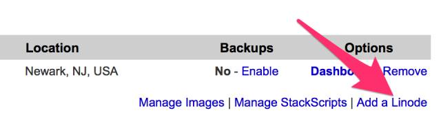
添加一个新的 linode （就是一个远程虚拟机）……

选择第一个配置（其实就是最便宜的那个）…… 然后注意，在底部的下拉菜单，最好选择一个美国区域的节点（前四个都是）—— 因为你看 Netflix 需要美国区 IP 地址。
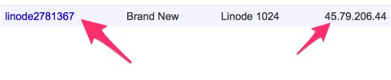
创建完成后，上图右侧会告诉你你的虚拟机 IP 地址，点击左侧的链接……
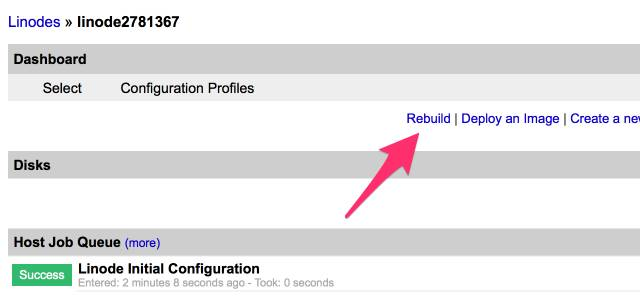
进入你的虚拟机管理页面（Dashboard）之后，点击“Rebuild” 链接……
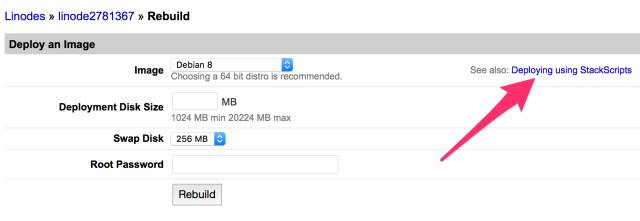
不用填这个表单，而是点击右上角的那个“Deploying using StackScripts”链接……
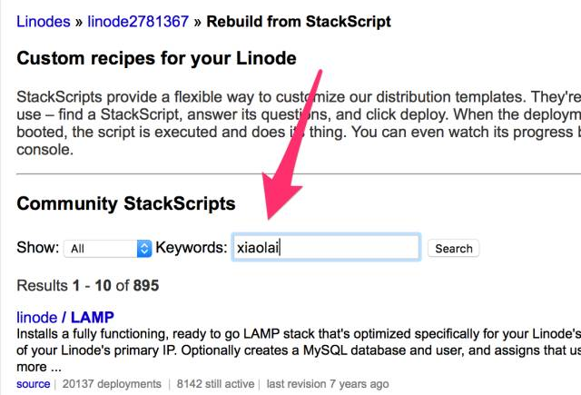
在随后的页面里，搜索“xiaolai”……
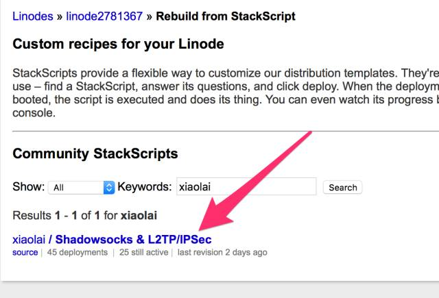
…… 就能找到我已经写好的 StackScript，点击那个链接！
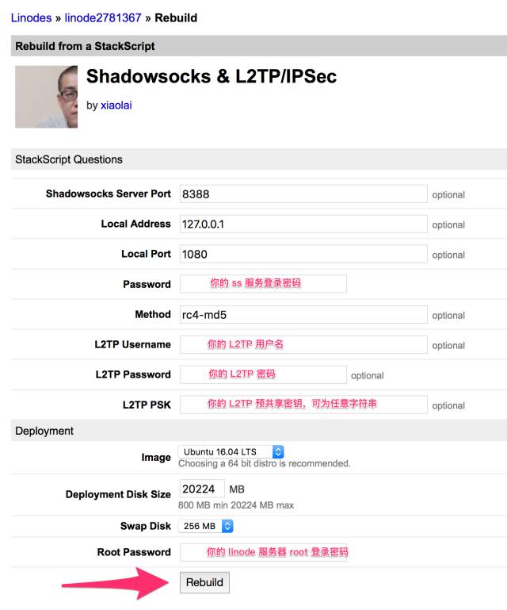
然后就是填写若干个字符串（都是各种密码），其实可以随便使用简单密码，反正你也不公开这个服务器地址…… 填好之后，按“Rebuild” 按钮。
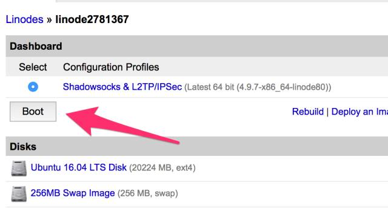
你会返回虚拟机管理页面（Dashboard）管理页面，点击那个 “Boot” 按钮，就是启动你的虚拟机……
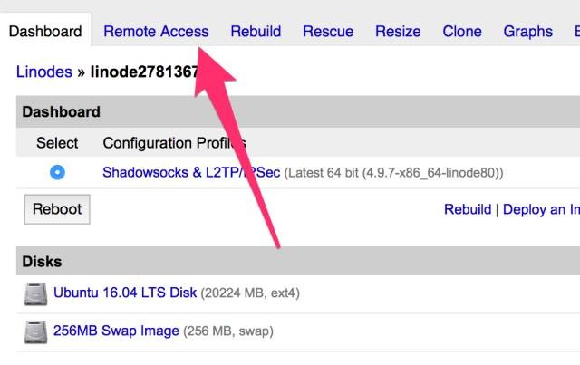
在虚拟机管理页面（Dashboard）管理页面上方的标签里，选择“Remote Access”……
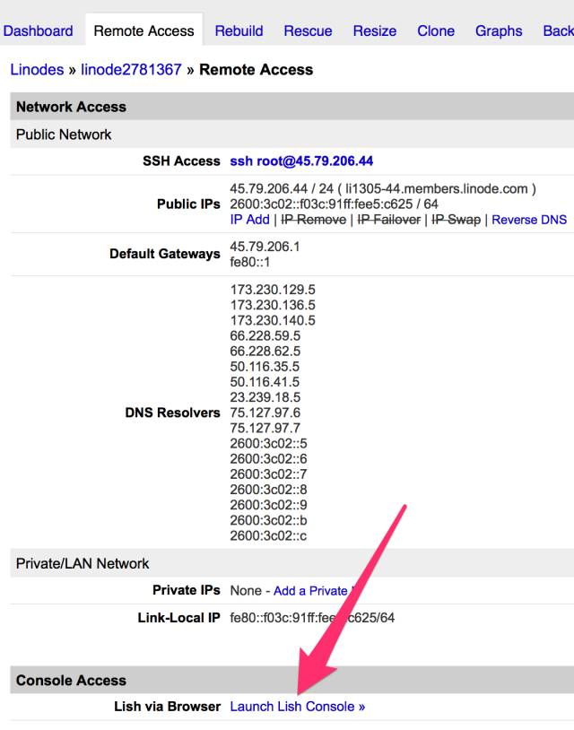
在页面底部，有个链接，“Launch Lish Console”，点它，会跳出一个小的浏览器窗口，你可以看到服务器在“紧张”地安装这个安装那个……
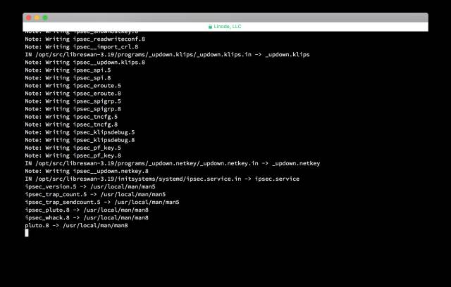
等一会儿，看到如下页面的时候，就是安装完毕了：
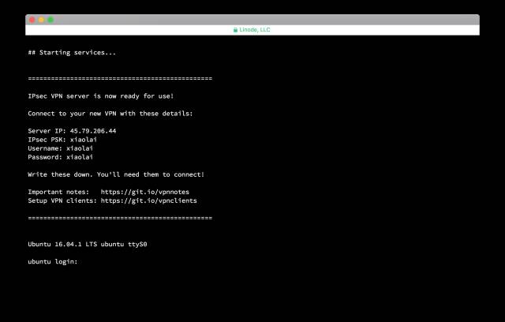
其实你没啥必要再登录这个服务器的，直接开始用以上信息把这个 linode 服务器当作自己的“微屁恩”就可以了……
2. 客户端
服务器端的设置，网上有很多很多教程，随便搜索一下 “L2TP” 或者 “Shadowsocks” 就能找到很多详细的教程，依葫芦画瓢就好了。
3. 电视端
到最后，发现小米电视还真的不错，可以很方便地使用小米电视的遥控器 APP 为它安装各种应用，包括影梭，Netflix，Youtube 之类的东西。
4. 路由器端
路由器端最好不要折腾了，因为最终会折腾死的 —— 局域网内有很多设备，弄不好会在各自的设置上产生奇怪的冲突，却又难以排查。各个设备设置各自的就好了。
另，有个朋友推荐了一个 APP，Cinema Box，试了一下，也是个神器。
说来惭愧，前两天其实发了个简短的“教程”，后来我自己删了，不是因为有人投诉我，而是因为我自己写错了一些内容，导致人们按那个教程做，服务器会报错…… 也就是说，我写了个“失败的教程”。
如何写一个好的教程呢？说来简单，只需要满足以下一些条件：
- 对小白有用
- 详细清楚（甚至不惜啰嗦）
- 实证有效（微信这种发出去就不能改的机制真是有一些副作用啊！）
- 最好图文并茂
- 偶尔夹杂一些其他干货……
另外， http://lifehacker.com 上就有很多好教程，都是可以当作“如何写一个好教程”的范本……
从今天开始，“学习学习再学习”接受各类“教程”稿件。
- 必须是原创（有引用的地方，必须标明出处）
- 必须对小白有用
- 必须实证有效
允许投稿者在文末展示自己的公共帐号二维码……
投稿请发至“lixiaolai@gmail.com”，邮件标题必须写“教程投稿”（否则会被过滤掉）。一周之内不回复，就说明尚未被采用。